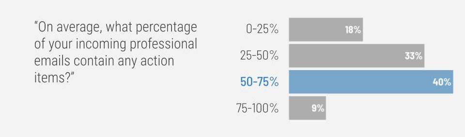
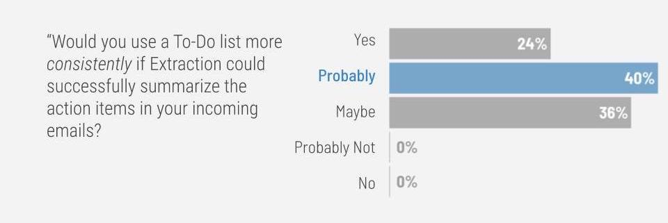

User Interface
When it comes to Extraction’s user interface, we wanted to stay true to Extraction’s primary mission of simplifying the lives of its users. As a result, our UI design prioritizes a simple and straightforward user experience and all the features we’ve decided to add were deemed necessary and irreplaceable.
The primary feature of Extraction is the generated list of action items. The user interface’s focus is on the list of action items to make it as easy as possible for users to access this information. We acknowledge the possibility of misclassification or a poor summary, and this is why the extension allows users to easily edit action items after the items are generated. Every feature we decided to include supplements this list, while simultaneously maintaining simplicity of the extension.

We originally planned on creating a system that could pull a batch of emails at a time and automatically turn them into action items. However, gmail authentication and scraping proved to be a difficult and imprecise task, so we decided to include the text box to allow users to correct possible errors or simply paste emails into the text box and forego the scraping process if they so chose to.
Our final user interface maintains the original design concept of simplicity, while also including all the features we deemed necessary to create a functional and exportable To-Do list.
Extraction Intent & Interest Survey
We conducted a survey of 33 professionals working in Marketing, Consulting, Education, Academia, Technology and other industries to gauge interest in Extraction and learn about respondents’ email and To-Do list usage. In this section we present some of the important survey results.

The majority of respondents (40%) said that 50-75% of their incoming professional emails contain action items. This result suggests that Extraction could save many professionals substantial amounts of time if they used Extraction in their daily workflows.

The majority of respondents reported that they would probably update their To-Do lists more consistently if Extraction could successfully summarize the action items in their incoming emails. Moreover, 64% said they either would or probably would. For this reason, we hypothesize that Extraction will also offer users a productivity boost through the pathway of more consistent use of To-Do list.